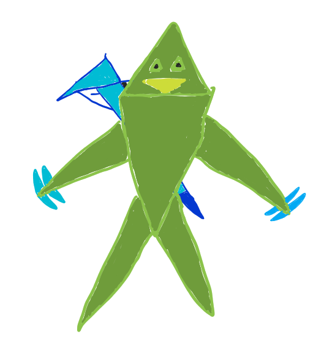
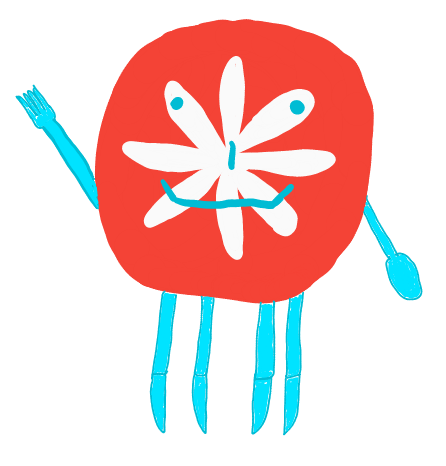
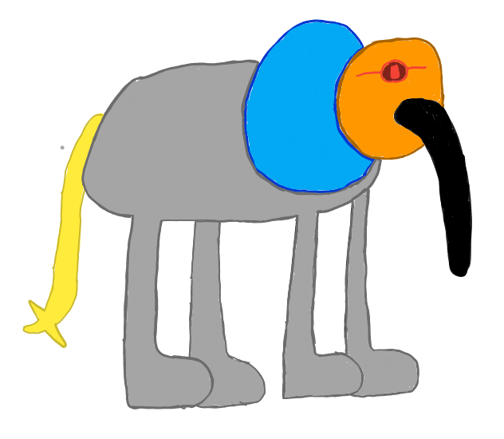

LOG IN
SIGN UP
LOG IN
SIGN UP
LOG IN
SIGN UP
LOG IN
SIGN UP
Haochiwa is a 4v4 game that is combines elements of an FPS and a MOBA. The objective of the game is to conquer more area than your opponents.
The game is divided into two halves, each of which is 10 minutes long. The teams switch sides after the first half ends.
At the end of each half, the area conquered is measured by drawing a polygon for each team. An example is shown below:

The score is computed in percentages. Here's the basis of the score:
The area is based on the top-down view. So, if two parts of the map overlap (with one part on top of the other), and both teams conquer either part (one team on the higher part, the other on the lower part), then that section of the map is considered "conquered by both teams".
At the end of the game, the scores on each half are averaged. The team with the higher score wins.
In case of a tie, the game normally just declares it as a draw. However, overtime can be activated for custom games.
Raised in a natural reserve in the Philippines, Crab I is a test subject for gene modifying. With his sharp claws and powerful natural shotguns on his back, he'll not waste time doing the Crab Rave.
Legend Type: Close-up. Close-ups are masters of short-range combat. You better back out when they start rushing you.

Triforce is a geometrical entity summoned by Dr. Muisatirev. His triangular weaponry will kill anyone too weak to comprehend him.
Legend Type: Ranger. Rangers are eagle-eyed. Binoculars are one of very few things that can match their sight.
Serving the waste disposal sector in China, Three Arr's is an advocate for eco-friendly materials. Collecting garbage for a living, she will make sure that enemies know they're trash in the game.
Legend Type: Heavy. Heavies are the big guys. When attacked by enemies, they take one for the team.

Partying from the United States, Plateliner is a must-have when celebrating. His good vibes make the team more motivated to mow down the enemy.
Legend Type: Close-up. Close-ups are masters of short-range combat. You better back out when they start rushing you.
Training in the grounds of Belgium, Bow Ender knows how to line up any shot. His precise aim and calm hands can make his opponents cry in fear.
Legend Type: Ranger. Rangers are eagle-eyed. Binoculars are one of very few things that can match their sight.

Representing the elephent herds in Botswana, Domiphant is an unpredictable beast. his sharp tail, big ears, and long trunk can snap an opponent in half.
Legend Type: Heavy. Heavies are the big guys. When attacked by enemies, they take one for the team.
Valorant's next agent tease. Reddit. (2020, December 9). Retrieved December 21, 2021, from https://www.reddit.com/r/VALORANT/comments/k9a9nu/valorants_next_agent_tease/